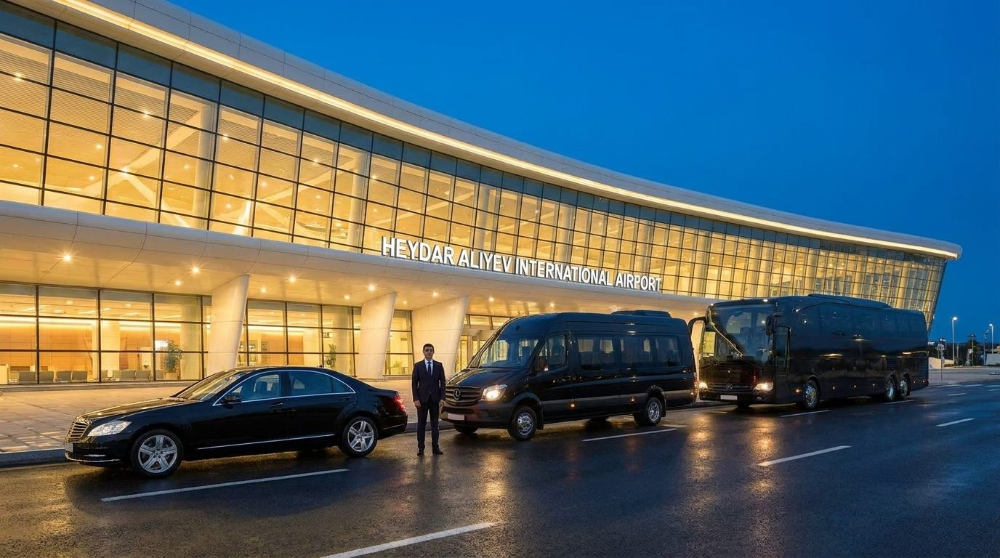

ورود آرام به باکو
از فرودگاه
تا اتاق شما.
ترانسفر فرودگاهی منظم و اختصاصی برای مسافران و گروههای ایرانی؛ با هماهنگی کامل قبل از پرواز.
→ بازگشت به خدماتاز درب فرودگاه

همراهی مطمئن در بدو ورود
از درب فرودگاه
تا تحویل اتاق بدون مشکل.
راننده شما پیش از رسیدن پرواز در فرودگاه حاضر است، با نام مسافر به استقبال میآید و شما را مستقیم و آسوده تا هتل میرساند. زمانبندی پرواز را پیگیری میکنیم تا حتی در صورت تغییر ساعت، هماهنگی شما بدون نگرانی ادامه پیدا کند.
سفر شما از لحظه ورود، با یک استقبال حرفهای شروع میشود.
درخواست ترانسفر ←۰۱
پیگیری پرواز
زمان فرود و تغییرات احتمالی پرواز شما از قبل بررسی میشود.
۰۲
استقبال در فرودگاه
راننده در محل مشخص با تابلو نام مسافر منتظر شماست.
۰۳
تحویل در هتل
مسیر تا هتل با خودرو مناسب و همراهی کامل انجام میشود.